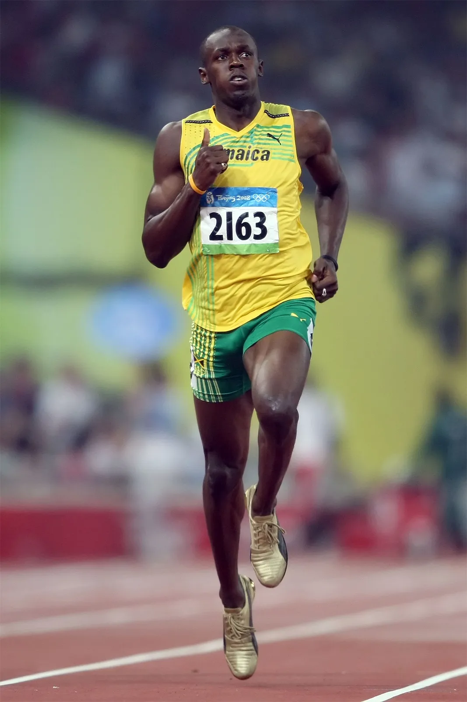

Basketball
Basketball is made up of 2 teams, 5 a side. Both teams are trying to score points. Getting a shot inside of the 3-point line is worth 2pts, and outside is worth 3 pts. This sport involved running up and down the court, passing, dribbling, rebounding, and shooting. It's a world known sport for indoors and out. With the best players coming from all over the world.
Football
Association football, more commonly known as football or soccer, is a team sport played between two teams of 11 players each who primarily use their feet to propel a ball around a rectangular field called a pitch.
Tennis
Tennis is a racket sport that is played either individually against a single opponent or between two teams of two players each. Each player uses a tennis racket that is strung with cord to strike a hollow rubber ball covered with felt over or around a net and into the opponent's court.
Swimming
Swimming is the sport or activity of propelling oneself through water using the limbs. Competitive swimming is usually performed in a 25m or 50m pool, using various stroke styles.
Golf
Golf is a club-and-ball sport in which players use various clubs to hit balls into a series of holes on a course in as few strokes as possible. Golf, although not requiring brutal strength, is a sport. Golf is a legitimate sport because it is highly competitive, requires mental capacity, and demands physical extortion and muscle use.
Taekwondo
Taekwondo, Tae Kwon Do or Taekwon-Do is a Korean martial art involving punching and kicking techniques, with emphasis on head-height kicks, spinning jump kicks, and fast kicking techniques. The literal translation for tae kwon do is "kicking", "punching", and "the art or way of".
Rugby
Rugby union, commonly known simply as rugby, is a close-contact team sport that originated at Rugby School in the first half of the 19th century. Rugby is simply based on running with the ball in hand.
surfing
Surfing is a surface water sport in which an individual, a surfer, uses a board to ride on the forward section, or face, of a moving wave of water, which usually carries the surfer towards the shore. Some of the best places to surf are Costa Rica, Australia, and Hawaii
Athletics
Athletics is a group of sporting events that involves competitive running, jumping, throwing, and walking. The most common types of athletics competitions are track and field, road running, cross-country running, and racewalking.
Netball

Netball is a ball sport played on a rectangular court by two teams of seven players. The primary objective is to shoot a ball through the defender's goal ring while preventing the opposing team from shooting through their own goal ring.
Skateboarding
Skateboarding is an action sport originating in the United States that involves riding and performing tricks using a skateboard, as well as a recreational activity, an art form, an entertainment industry job, and a method of transportation.
Softball
Softball is a game similar to baseball played with a larger ball on a smaller field, with only underhand pitches permitted. Softball is played competitively at club levels, the college level, and the professional level. The game was first created in 1887 in Chicago by George Hancock.